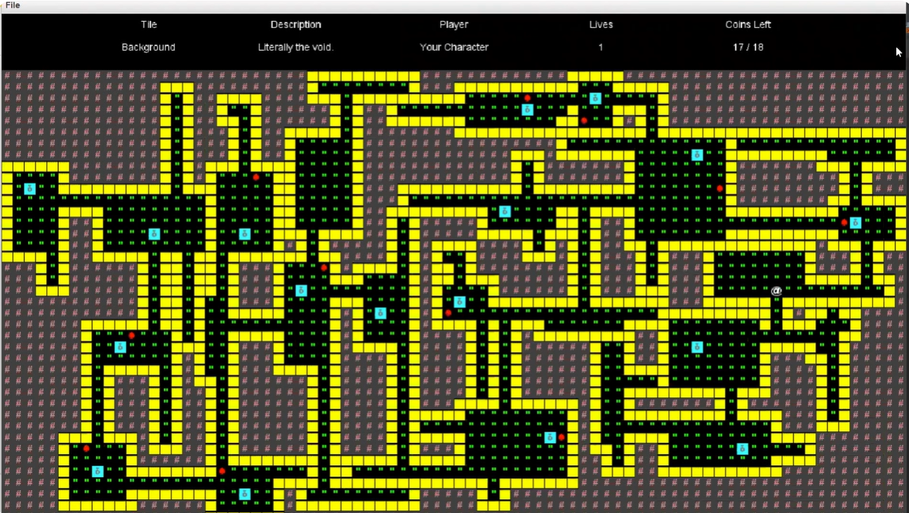

Mipmap and Triangle Rasterizer
 |
|
 |
My 2D rasterizer. It features modern anti-aliasing superampling, modeling support, barycentric coloring, mipmap pixel sampling, and mipmap level samplings. See writeup here.
Procedurally Generated Video Game
|  |
|
A 2D procedurally generated video game. It features difficult gameplay, randomized world generation and enemy behavior, save and load features, and seed selection. Note that the same seed always generates the same world, and different seeds generate different world. See this video here.
Scheme Recursive Art Competition Submission
My submission to a school art competition, made using their provided turtle in the Scheme programming language-- a tail recursive language-- which does not support iteration. It is a particularly old language that has become esoteric through the years. See the code here.
Apple Stock Analysis
This is a data science presentation I did for UC Berkeley's Data Science Society. It features an analysis of Apple stock (NASDAQ:APPL) in relation to their X posts (previously called Twitter during the creation of the project). It was made in collaberation with Austin Nicola Ardisaguptra (the supervisor), Rohan Ganguli, David Li, Rachel Park, and Ivy Sim.
See the presentation here. See the code here.
Mexican Literature Presentation
This is a project I did for a general education English class. Because I went above and beyond and included data science where I did not have to, I thought to include this here because I did my own research through compiling raw data.
See the presentation here. See the code here.